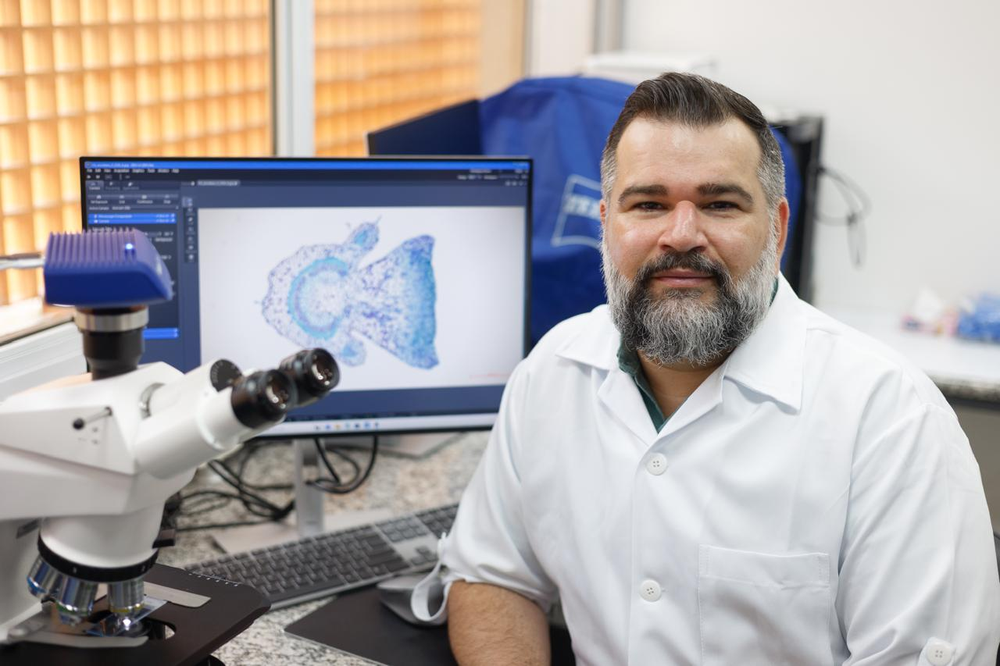

Ítalo Antônio Cotta Coutinho
Professor Doutor · Universidade Federal do Ceará (UFC)
Fortaleza, Ceará, Brasil
- Anatomia vegetal
- Estruturas secretoras
- Histoquímica
- Anatomia aplicada à taxonomia
- Morfologia vegetal
- Filogenia de plantas
Sobre
Sua pesquisa investiga a anatomia vegetal com ênfase em estruturas secretoras e histoquímica — a caracterização dos metabólitos produzidos pelos diferentes tipos dessas estruturas. Busca compreender as adaptações anatômicas de espécies vegetais aos ambientes onde ocorrem, correlacionando-as a fatores abióticos como luz, água, solo e temperatura. Um de seus principais focos é o uso da anatomia como ferramenta aplicada à taxonomia e à filogenia de grupos vegetais, tendo trabalhado extensamente com o gênero Chamaecrista (Leguminosae – Caesalpinioideae). Tem também particular interesse nas relações ecológicas — mesmo que hipotéticas — entre características anatômicas e os animais que visitam estruturas secretoras.
A colaboração com o LIPA se deu por meio do pós-doutorado realizado no IPA em 2025–2026, sob supervisão de Anselmo Nogueira. A parceria une o expertise de Ítalo em anatomia vegetal e estruturas secretoras ao foco do laboratório em interações planta-animal, abrindo caminhos para investigar a base morfológica e histoquímica de estruturas envolvidas em mutualismos. Atualmente é professor do Departamento de Biologia da UFC e membro do corpo permanente do Programa de Pós-Graduação em Sistemática, Uso e Conservação da Biodiversidade (PPGSis).
Trajetória no LIPA
Clique em uma etapa para ver detalhes.
2025–2026 · Universidade Federal do ABC (UFABC)
- Supervisor:
- Anselmo Nogueira
- Bolsista:
- FAPESP
